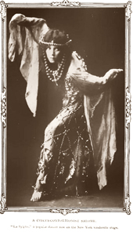

Acro Dance is a style of dance that combines classical dance technique with precision acrobatic elements. It is defined by Acro is an especially challenging dance style for dancers as it requires them to be trained in both dance and acrobatic skills. Acro dancers must be in excellent physical condition as well, because acro is a physically demanding activity.
History
Image: Vaudeville dancer La Sylphe (c. 1908)
Acrobatic dance emerged in the United States and Canada in the early 1900s, as one of the types of acts performed in vaudeville. Although individual dance and acrobatic acts had been performed in vaudeville for several decades prior to 1900, it was not until the early 1900s that it became popular to perform acts that combined dance and acrobatic movements.
Acrobatic dance did not suddenly appear in vaudeville; rather, it appeared gradually over time in a variety of forms, and consequently no individual performer has been cited as its originator. Sherman Coates, who performed with the Watermelon Trust from 1900 to 1914, was recalled by fellow dancers as the first acrobatic dancer they had ever seen.[2] Another of the earliest documented acrobatic dance performers was Tommy Woods, who became well known for his slow-motion acrobatic dance in Shuffle Along, in which he would execute acrobatic movements precisely in time with the music.[3] In 1914, acrobat Lulu Coates formed the Crackerjacks, a popular vaudeville troupe that included acrobatic dance in their performance repertoire up until the group disbanded in 1952.[4] Many other popular vaudeville companies combined acrobatics and dance in their shows, including the Gaines Brothers.
Since the decline of the vaudeville era, acrobatic dance has undergone a multi-faceted evolution to arrive at its present-day form. The most significant aspect of this evolution is the integration of ballet technique as the foundation for dance movements, thus bringing into acro dance a precision of form and movement that was absent in vaudeville acrobatic dance. Also, vaudeville acrobatic dances were often little more than acrobatics set to music, whereas modern acro dance is fundamentally dance, with its acrobatic movements performed in a dance context.
Characteristics

A defining characteristic of acro is the smooth, graceful transitions between dance and acrobatic movements. Also, a dance must have a significant percentage of dance movement, with respect to its acrobatic content, in order for it to be categorized as acro. For example, a gymnastics floor exercise is not considered to be acro because it has little or no dance movement compared to its acrobatic content, and also because it lacks smooth transitions between dance and gymnastic movements.
Dance technique
The dance movements in acro are founded in ballet, jazz, lyrical and modern dance styles. Acro dance movements are not restricted to these dance styles, but the complete absence of these styles will typically cause a dance to be categorized as something other than acro (e.g., breakdance).
Acrobatic elements
The acrobatic movements and acts of balance performed in an acro dance are referred to as tricks. A variety of tricks are commonly performed in acro dance, varying widely in complexity and the skills required to perform them. Aside from the obvious requirement that dancers possess the requisite skills to perform tricks, the types of tricks that can be performed in an acro dance depends on the number of dancers.